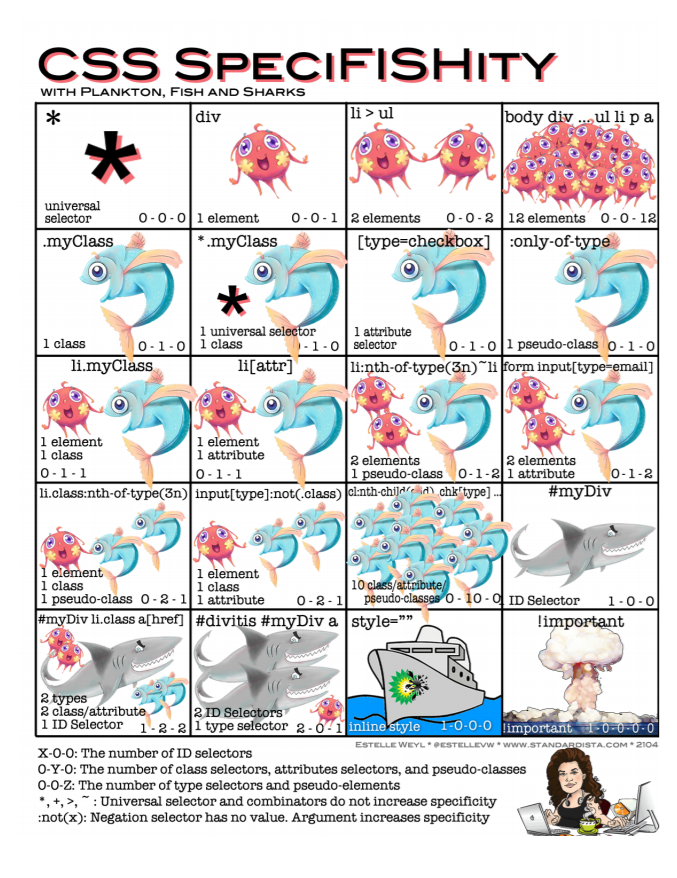
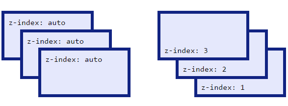

<!DOCTYPE html><link><head><script></body><meta>
<meta charset="utf-8">
<meta http-equiv="x-ua-compatible" content="ie=edge">
<meta name="viewport" content="user-scalable=no, initial-scale=1, maximum-scale=1, minimum-scale=1, width=device-width">
<link><title><head><link rel="icon" href="favicon.ico"><div>(
<div>, <p>, <h1>, <ul>, <section>(
<span>, <a>classididdata-</div>, </script><input>
.container#myButton(
https://necolas.github.io/normalize.css/(
https://meyerweb.com/eric/tools/css/reset/
#submitButton.layer-wrapper
[100].wrapper .container button {
[101] background-color: #f00;
[102]}
..................................
[255].wrapper .container button {
[256] text-transform: uppercase;
[257]}
.container {
background-color: transparent;
background-image: url('../../images/pattern.png');
background-repeat: no-repeat;
background-position: 0 0;
background-size: 100% 100%;
}
use this:
.container {
background: url('../../images/pattern.png') no-repeat 0 0 / 100% 100% transparent;
}
body,
html {
width: 100%;
height: 100%;
overflow: hidden;
}
instead of:
body, html {
width: 100%;
height: 100%;
overflow: hidden;
}
z-index Z-index only works on positioned elements:
position: absolute;position: relative;position: fixed;